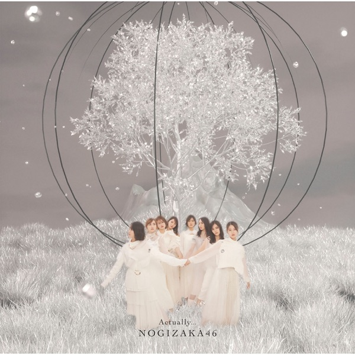

サカミチ
サカミチActually...あくちゅありー

初収録リリース「Actually...」のジャケット
乃木坂46
発売日：2022-03-23
収録：Actually...（29thSG）
種別：表題曲
センター：中西アルノ
作曲：NAMITO
編曲：APAZZI
ライブ披露：72件
フォーメーション
上が後列、下が前列です。色付きがセンター。（公式発表に基づく）
 田村真佑
田村真佑 掛橋沙耶香
掛橋沙耶香 清宮レイ
清宮レイ 鈴木絢音
鈴木絢音 樋口日奈
樋口日奈 岩本蓮加
岩本蓮加 柴田柚菜
柴田柚菜 早川聖来
早川聖来 久保史緒里
久保史緒里 賀喜遥香
賀喜遥香 与田祐希
与田祐希 遠藤さくら
遠藤さくら 筒井あやめ
筒井あやめ 梅澤美波
梅澤美波 山下美月
山下美月 中西アルノ
中西アルノ 齋藤飛鳥
齋藤飛鳥 秋元真夏
秋元真夏参加メンバー（18名）
秋元真夏、齋藤飛鳥、樋口日奈、鈴木絢音、岩本蓮加、梅澤美波、久保史緒里、山下美月、与田祐希、遠藤さくら、賀喜遥香、掛橋沙耶香、柴田柚菜、清宮レイ、田村真佑、筒井あやめ、早川聖来、中西アルノ
この曲が披露されたライブ（72件）
新しい順に20件まで表示しています（全72件）。